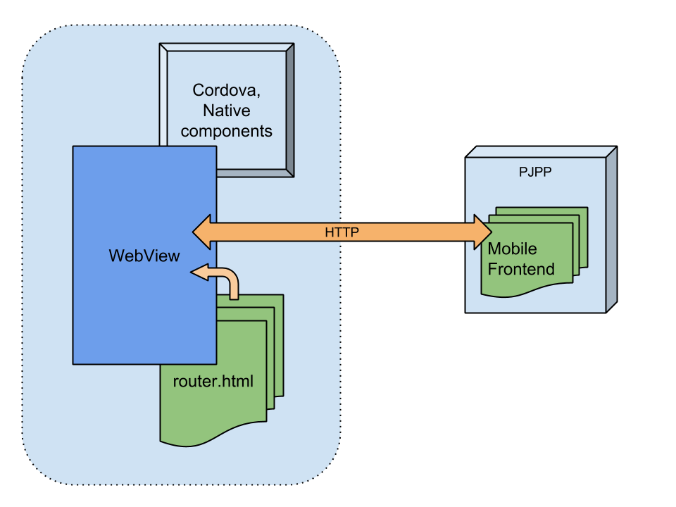

Experteer Career smartphone app
Native app based on web architecture
Taras Struk
2 Jun. 2014
Motivation
- presence in Apple and Google app markets
- tech. infrastucture benefits
Requirements
- better as web user experience
- + native features
Idea
-
... put existing web-app in a 'shell'
that it looks and feels like a native app
... put existing web-app in a 'shell'
that it looks and feels like a native app
Components
- native framework ( Apache Cordova )
- Cordova add-ons
- remote web frontend: m.experteer.com
- bundled web part ( router.html )
- native code to handle specific tasks
- "bridge" to connect web and native parts
Diagram
Apache Cordova highlights
 Apache Cordova is a set of device APIs that allow a mobile app developer to access native device functions
Apache Cordova is a set of device APIs that allow a mobile app developer to access native device functions
- ... provides a platform-independend API to load a bundled or remote HTML content into WebView
- ... provides a set of JavaScript libraries with device-specific native code
installed Cordova plugins
- com.cmackay.plugins.googleanalytics
- it.mobimentum.phonegapspinnerplugin
- me.apla.cordova.app-preferences
- org.apache.cordova.geolocation
- org.apache.cordova.inappbrowser
- org.apache.cordova.network-information
Bundled web component: router.html
- renders static pages, e.g. "offline" and "request error"
- provides base API for adding more bundled HTML pages
- assets pipeline ( sprockets )
- test tasks ( rspec, capybara )
Specific tasks, handled natively
- Language / Country version detection
- Network requests watching and reacting
Advantages
- focus on web development, less native coding
- based on existing mobile web-app frontend and backend
- regular cookie auth, no sensible users' data stored in app
Con's
- depends on pjpp development cycle
- speed: downloads each time whole web-app
- hardly usable under unreliable networks
Challenges
- country versions mapping
- offline scenario
- cellular networks limitations
- improve scrolling and job navigation
- ux. and marketing campaigns tracking
Current limitations
- payment ( iOS )
- premium functions/jobs for basic accounts ( iOS )
Going forward
- Push notifications
- Minimum profile
- Android > 4.0 *webkit
- Moving presentation layer towards client (bundled HTML)
- Service-oriented mobile backend